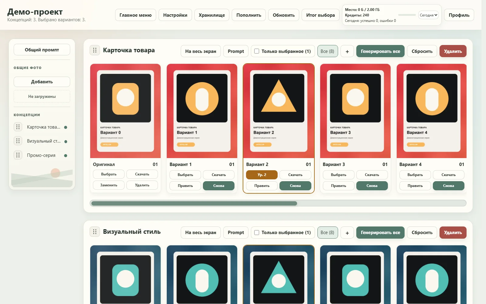

Аккаунты и данные
Регистрация, защищённые сессии, PostgreSQL и отдельные файлы, настройки и проекты для каждого пользователя.
PRODUCTION AI SAAS
Спроектировал, разработал и запустил сервис для серийной генерации и отбора товарной графики.

Большая серия быстро превращается в десятки промптов, сотни файлов и ручной поиск удачных версий.
Artelium держит весь цикл в одном месте: от идеи и референсов до отбора, правок и готовой выгрузки.
Интерфейс рассчитан на реальную работу с большими наборами, а не на одну генерацию за раз.
Отдельный проект со своими изображениями, настройками и историей.
У каждой серии свой промпт, референсы, формат и количество вариантов.
Задачи выполняются параллельно, поддерживают повторы и отмену.
Оценки, фильтры, точечные правки, скачивание и итоговый ZIP.
Полноэкранный обзор помогает сравнивать большую серию, отмечать просмотренное и не терять выбранные версии.
Я разработал продуктовый контур, который позволяет давать доступ реальным пользователям и контролировать стоимость каждой операции.
Регистрация, защищённые сессии, PostgreSQL и отдельные файлы, настройки и проекты для каждого пользователя.
Параллельная обработка, лимиты, повторы после временных сбоев, отмена и подробные статусы.
Резерв при старте задачи, списание после успеха и автоматический возврат при ошибке или отмене.
Админ-панель, статистика пользователей, ручные начисления и контроль хранилища.
Интерфейс показывает баланс, историю операций и занятое место. Пользователь понимает, за что списались кредиты и где лежат результаты.
Все части Artelium я собрал сам и довёл до работающего production.
FULLSTACK РАЗРАБОТКА ПОД КЛЮЧ